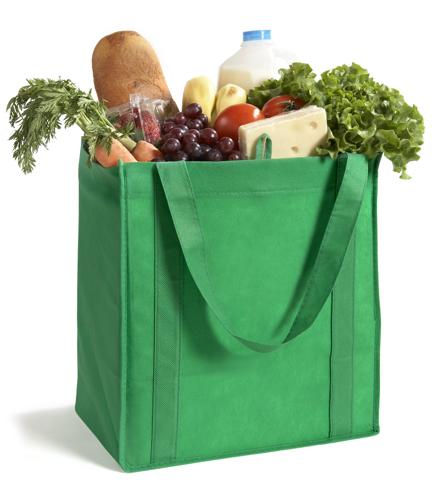
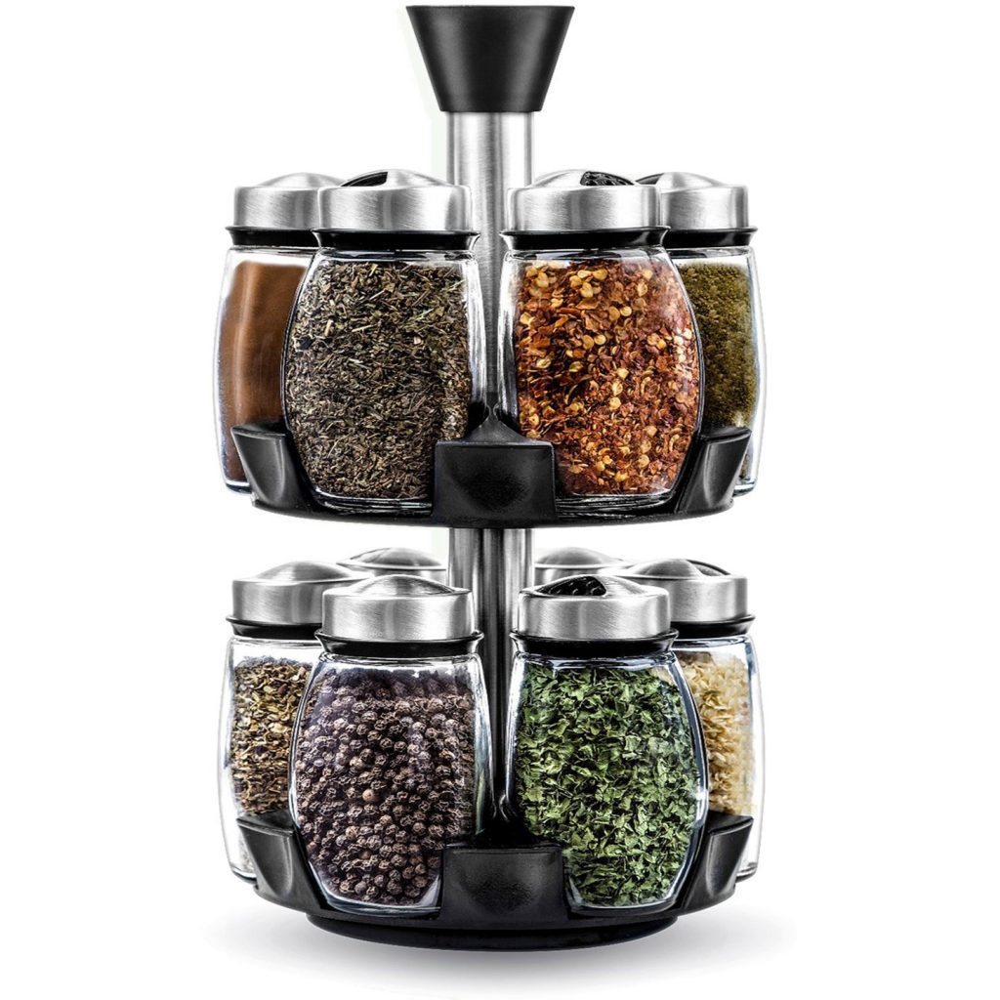

When it comes to buys for your first kitchen it is important to get all the basics before you start buying the fancy stuff!
For me at least the very basics are as follows;
2x Chopping boards - one for meat and one for vegetable
A selection of different cutting knives (You can get a basic knife block from places like Wilko or large Tesco stores)
Cutlery (I would get enough for 4 people just incase you have guests)
Plates & bowls (again, I would get 4 incase of guests)
Washing up sponges
A set of different sized pans (with lids)
A large wok or frying pan
Large wooden or silicone spoons
Masher
Tin opener
Spatula
Colinder
Whisk
Measuring spoons
Oven trays
Mugs & glasses
Rolling pin
Drying rack for plates
Washing up tub
We all move out eventually and we are usually going to be given most of the things listed above, or perhaps you already bought some in preparation for moving
Here is my list of what I would class as basic electrics for your kitchen, I am not going to include large items
Toaster
Microwave
Slow cooker/crock prot
Air fryer
Rice cooker
Kettle
When you are on a budget it is important to meal prep, to do this you will need Ziploc bags and some plastic containers! Its as simple as that!
If you usually find yourself making too much food or decide to bulk cook meals rather than letting it go to waste, you can just put it away for another day
you can freeze and reheat most things, with a few exceptions that you can find by a simple internet search (one example is eggs)
Another things you can do to save money and save food waste is start to buy frozen vegetables, tinned fruit and easy garlic, ginger and chillies
So it is finally time to do some grocery shopping, your first shop may cost a bit more than the average shop if you are starting from scratch, this is normal!
For your first shop you want to get a lot of spices, such as salt, pepper, chilli powder, curry powder and mixed herbs, you can usually find the 'own brand' versions which are a lot cheaper than the branded ones and are the exact same ingrediants!
First shop;
Pasta
Rice
Chopped tomatoes x4
Spices (as listed above)
Bread
Milk
Chicken breasts or chicken thighs
Mince beef
Oil of choice
Butter
Frozen vegetables (such as onions, peppers, mixed veg)
Easy cut garlic and chillies (if you like your food spicy like I do!)
Sauces of choice (ketchup, mayo etc)
Potatoes of choice
Washing up liquid
Tea or coffee
Flour, sugar, baking powder, yeast
Laundry detergent and fabric softner *and dryer sheets if you also have a dryer*
A very cheap bottle of red wine (this may seem like an expense, but I tend to add this to pasta sauces or even gravy for a fuller rich flavour)
Gravy granules


As you go shopping more & more often you will see the kind of things that you need to top up on on a weekly basis, fortnightly basis or monthly basis and this all comes in time!